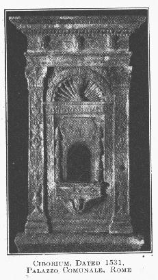

|
| A B C D E F G H I J K L M N O P Q R S T U V W X Y Z |

A chalice-like vessel used to contain the Blessed Sacrament. The word is of rather doubtful etymology, Some derive it from the Latin word cibus, "food", because it is used to contain the Heavenly Bread; while others trace it to the Greek kirorion, "cup", because of the original shape of this Eucharistic receptacle. The term was also applied in early Christian times to the Canopy that surmounted and crowned the altar (see article ALTAR CANOPY), but according to modern liturgical usage the word denotes exclusively the sacred vessel employed for the reservation of the Consecrated Species. At the present day two vessels are used to reserve the Blessed Sacrament: one, called a pyx, is a small round box and serves for carrying the Blessed Sacrament to the sick; the other, generally styled a ciborium, is used for distributing Holy Communion in churches and for reserving the consecrated particles in the tabernacle. In shape the ciborium resembles a chalice, but the cup or bowl is round rather than oblong, and provided with a conical cover surmounted by a cross or some other appropriate device. The bottom of the cup should be a little raised at the centre so that the last particles may be easily removed and the purification more conveniently performed. The material should be gold or silver (base metals are sometimes allowed), but the interior of the cup must be always lined with gold. The ciborium is not consecrated, but blessed by a bishop or some priest deputed by him, according to the form given in the Roman Ritual. While containing the Sacred Species it should be covered with small white veil of silk or cloth of gold, and may not be handled except by sacred ministers; when empty and purified it may be touched by all clerics (Cong. of Rites, Jan., 1907), and by lay persons if specially authorized. In Eastern Churches the paten is commonly used for the distribution of Communion, and the Blessed Sacrament is reserved in gold or silver boxes covered with silk and suspended from the altar-canopy in accordance with ancient custom.
During the first three centuries the Blessed Eucharist was not generally reserved in churches owing to the danger of profanation and the persecutions, but the faithful sometimes kept the Sacred Species in Silver boxes in their homes for the purpose of receiving it at the time of death (St. Jerome, De Afr. Pers., I; Tertullian, On Prayer 14, etc.). In the fourth century there are evidences that it was reserved in churches, but only for the sick. In the fifth and sixth centuries reservation was more common, and the method adopted varied with time and place. The vessels which the Sacred Species was kept were called indiscriminately capsa, pyxis, cuppa, turris, columba, and ciborium, and were themselves preserved either in a chamber in the sacristy (secretarium), in a niche in the wall or pillar (ambry), under an altar, or in other places designated by the words diaconium, pastophorium, vestiarium, etc. Subsequently it became the practice to reserve the Blessed Sacrament in dove-shaped receptacles (columb) or in little towers (turres), the former being suspended by chains from the ciborium or canopy of the altar, and the latter being usually placed in the Armarium. In the sixteenth century the columbæ and the towers began to disappear, and gave way to the tabernacle and the custom which is now universal throughout the Western Church. Ancient vessels of reservation may still be seen in the treasuries of continental cathedrals at Milan, Cologne, Rouen, and elsewhere. (See TABERNACLE; RESERVATION OF THE BLESSED SACRAMENT.)
BONA, Rer. Lit. duo Libri, I. xxv; MARTENE, De antiq. eccl. ritibus, I, xix; VAN DER STAPPEN, De adm. Sacr. (Mechlin, 1900); CORBLET in Hist. du sacrement de l'euchatistie (Paris, 1886), especially II, 285-314, and I, 520-82; LEROSEY, Manuel lilurgigue (Paris, 1890), I. 179 sq.; DUGDALE, Monasticon Anglicanum (London, 1682), passim; KRAUS, Gesch. der christlichen Kunst (Freiburg im Br., 1896) passim; REUSENS, Elements d'archeol. Chret. (Louvain, 1885), I, 464, II, 327 sq.
APA citation. (1908). Ciborium. In The Catholic Encyclopedia. New York: Robert Appleton Company. Retrieved April 26, 2010 from New Advent: http://www.newadvent.org/cathen/03767a.htm
MLA citation. "Ciborium." The Catholic Encyclopedia. Vol. 3. New York: Robert Appleton Company, 1908. 26 Apr. 2010 <http://www.newadvent.org/cathen/03767a.htm>.
Transcription. This article was transcribed for New Advent by Wm Stuart French, Jr. Dedicated to Sr. Anna Maria, MICM and Sr. Mary Theresa, MICM.
Ecclesiastical approbation. Nihil Obstat. November 1, 1908. Remy Lafort, S.T.D., Censor. Imprimatur. +John Cardinal Farley, Archbishop of New York.
Contact information. The editor of New Advent is Kevin Knight. My email address is webmaster at newadvent.org. (To help fight spam, this address might change occasionally.) Regrettably, I can't reply to every letter, but I greatly appreciate your feedback — especially notifications about typographical errors and inappropriate ads.
{kind=link}